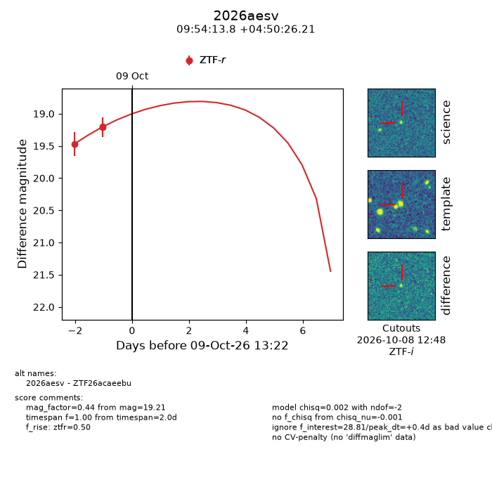
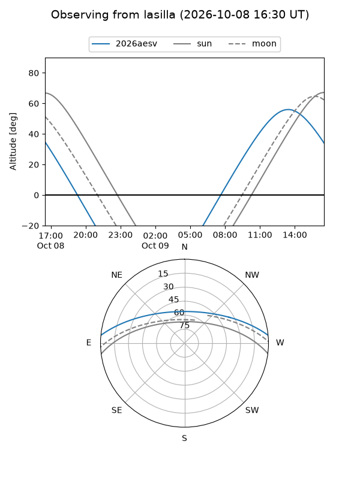
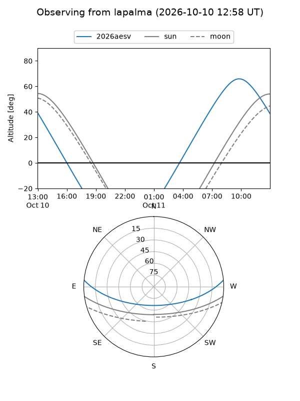
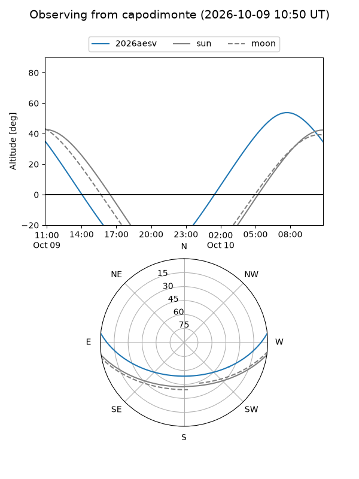
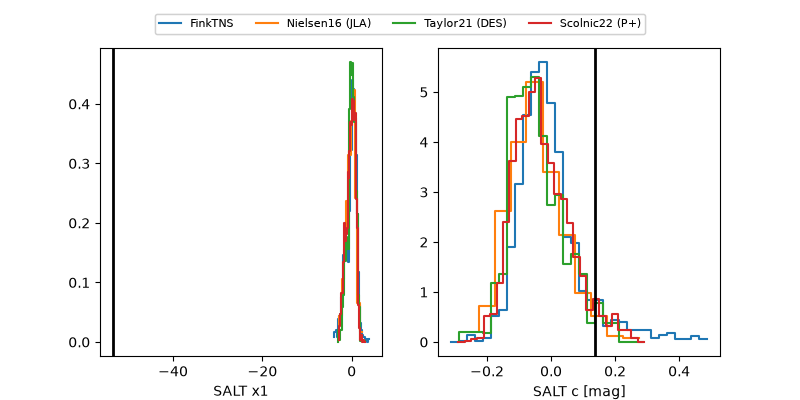

2026aesv
Target 2026aesv at 2026-10-09 13:25
Aliases and brokers:
FINK-ZTF: ztf.fink-portal.org/ZTF26acaeebu
Lasair-ZTF: lasair-ztf.lsst.ac.uk/objects/ZTF26acaeebu
ALeRCE-ZTF: alerce.online/object/ZTF26acaeebu
YSE-PZ: ziggy.ucolick.org/yse/transient_detail/2026aesv
TNS name: wis-tns.org/object/2026aesv
Direct TNS query: direct search
alt names
ZTF26acaeebu (ztf,fink_ztf)
2026aesv (tns,yse)
Coordinates:
equatorial (ra, dec) = 148.5576,+4.84061
equatorial (HMS+DMS) = 09:54:13.82,+04:50:26.21
galactic (l, b) = (232.6964,+42.31014)
Flags:
peak dt: +0.4
Photometry:
last ztfr=19.21
3 ztfr detections
Lightcurve

Visibility



Additional plots
